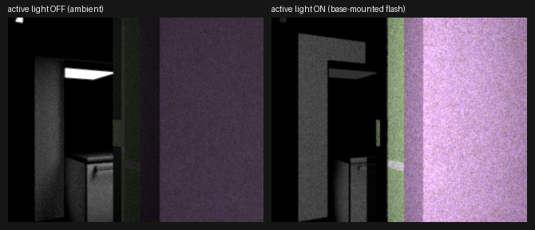
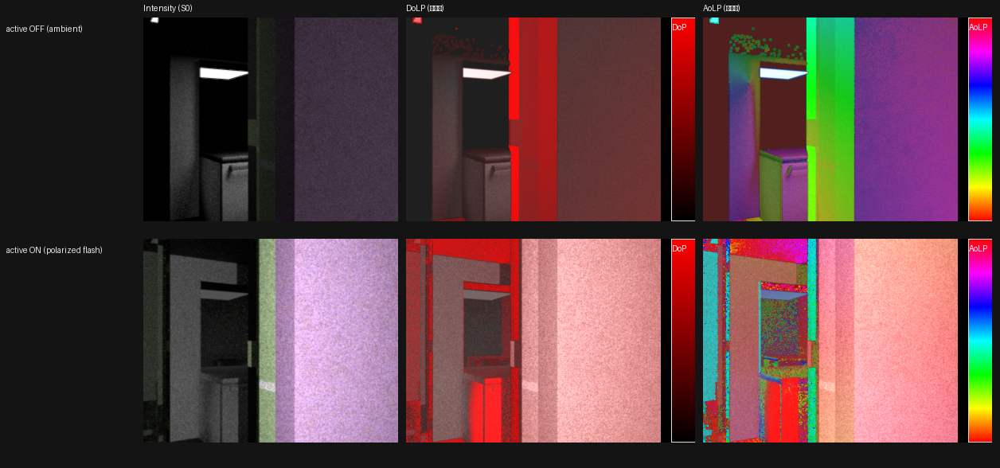
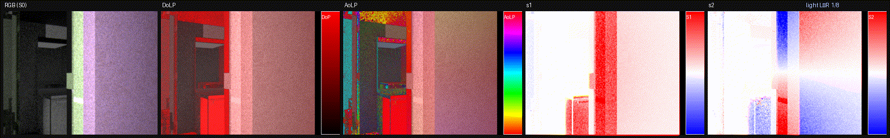
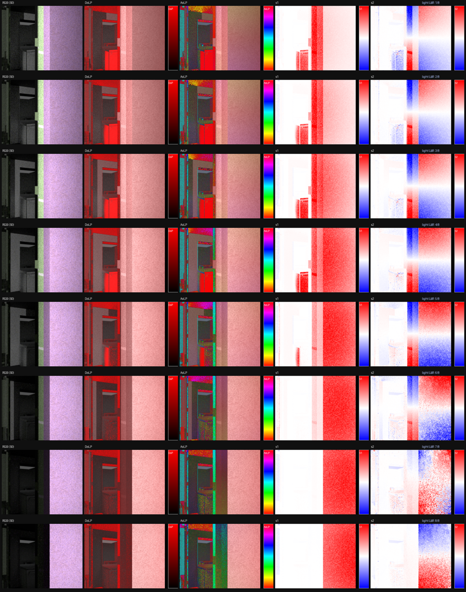
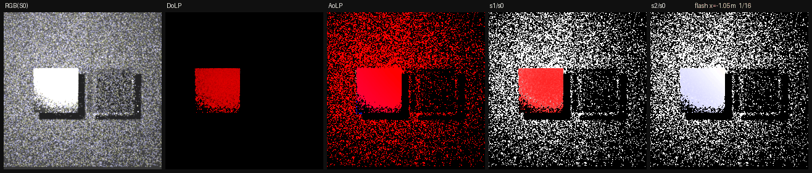
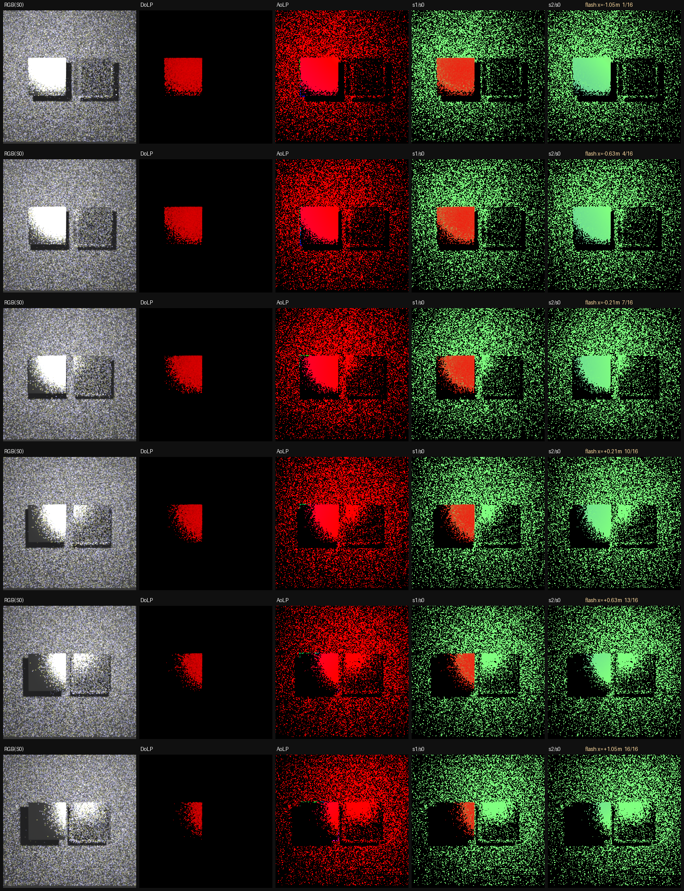
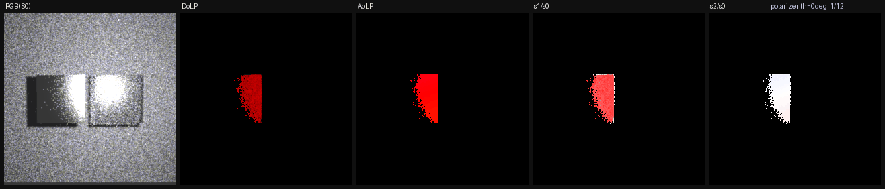
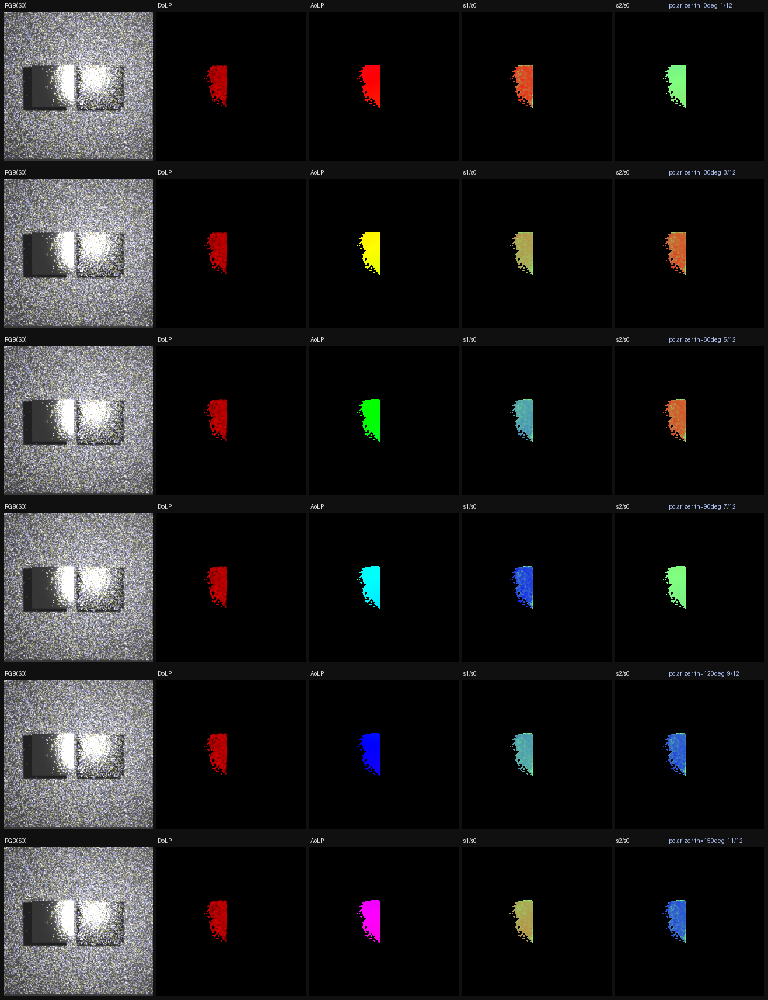

Active Flashing Imaging System — rig-mounted RGB/NIR flash + linear polarizer
요약
로봇 base에 장착된 active light(RGB flash + NIR flash) 와 linear polarizer(편광 조명) 로
"active flashing imaging system" 을 렌더할 수 있게 파이프라인·스키마·UI를 준비했다.
신규 C++ 없이 이미 두 빌드에 컴파일된 Mitsuba 플러그인(spot/point emitter,
polarizer BSDF)을 조합한다. rig에 active light를 넣으면 sweep→렌더까지
flash 조명 + 편광 조명(Stokes)이 end-to-end로 나온다. active light ON/OFF 비교 렌더로 검증했다.
1. 배경 — 왜 active flash
OpticalNav은 편광·NIR 멀티모달 센서 데이터가 목표다. 실제 로봇 imaging system은 카메라와 함께
flash(능동 조명) 가 발광하고, specular/diffuse 분리를 위해 편광자 를 조명(또는 카메라) 앞에 둔다.
기존 파이프라인의 능동 조명은 request-level 단일 AssistLightSpec(camera_aligned_rect,
camera-baked, NIR grayscale proxy)뿐이라, 카메라 리그에 여러 광원을 붙이거나 UI에서 구성할 수 없었다.
2. 설계 — 기존 플러그인 조합
- 필요 플러그인은 이미 존재:
spot/pointemitter(intensity=spectrum,to_world/intensitytraversable),polarizerBSDF(문서화된 linear polarizer;theta/transmittancetraversable,*_spectral_polarized에서 Mueller 행렬, RGB 변형에선 neutral ND). 두 빌드 모두 컴파일됨 → C++ 불필요. - 편광 조명: emitter는 unpolarized 방출이므로, 편광 조명은 emitter +
polarizersurface 조합. polarizer를 emitter 광축(+Z) 앞 2cm에 배치. 카메라측 분석은 기존 Stokes 출력(s1/s2/dop/aolp)으로 post에서 임의 analyzer각 계산. - base-mounted: 광원 pose =
base_pose @ mount(base_link 장착). rig-level로 관리해 여러 센서가 공유.
3. 구현
| 레이어 | 변경 |
|---|---|
| Bridge | ActiveLightSpec(light_id·emitter_type·mount·modalities·spectrum·radiance·beam·polarized+angle) + RenderRequest.active_lights(legacy assist_light fallback 유지). io/manifest 라운드트립·검증. |
| Staging | multimodal.py::_append_base_active_lights — base_pose@mount(_active_light_mount_matrix)에 <emitter spot|point> + 편광 시 <bsdf polarizer> surface. render_modalities→_stage_path_scene(active)/_stage_stokes_scene(polar)/observation_bridge 브랜치에 가산 배선(기본값 빈 값이면 기존 동작 불변). |
| Rig+Sweep | authoring_map.AuthoringCameraRig.active_lights + 데몬 _normalize_camera_rig 영속화. sweep 3경로(graph/custom/direct)가 rig active_lights→RenderRequest 스레드(sensor_sweep.py). |
| UI | api.ts CameraRigActiveLight + Camera Rig 편집기 "Active Lights" 섹션(Add RGB/NIR Flash, emitter_type·mount·spectrum·radiance·beam·modality chips·polarized+angle). svelte-check 0 errors. |
4. 결과 — active light ON/OFF 비교
저장된 polar 요청(infinigen_kr_20000221 vp_000039/h_240)에 active_lights만 on/off로 달리 렌더.
OFF는 ambient(창광만)로 어둡고, ON은 base-mounted flash가 방 전체를 조명한다 — 평균 밝기 2.83× 상승(mean 38.3 → 108.3).

고품질(spp 1024) RGB + 편광 비교 — polarized flash
같은 시점을 path/polar spp 1024 로, 편광 spot flash(polarized=true) on/off로 렌더해 intensity(S0)·DoLP·AoLP를 비교했다. 편광 능동 조명은 조명(intensity)뿐 아니라 편광 상태 자체를 부여한다 — DoLP가 전반적으로 상승하고 AoLP 구조가 크게 재편된다.
| 지표 | OFF (ambient) | ON (polarized flash) | 비 |
|---|---|---|---|
| Intensity S0 (mean) | 31.8 | 101.3 | 3.19× |
| DoLP (dop R-channel mean) | 57.7 | 125.1 | 2.17× |
| AoLP | ambient 자연 편광각 → 편광 조명이 지배하는 구조로 재편(육안 확연) | — | |

Relighting sweep — active light L→R (RGB · DoLP · AoLP · s1 · s2)
고정 시점에서 편광 flash를 좌→우로 8프레임 점진 이동(mount x −0.6→+0.6m)하며 relighting을 캡처했다. RGB(S0) 조명이 좌측 구조물→우측 기둥으로 이동하고, 편광 채널(DoLP·AoLP·s1·s2)이 조명–표면–카메라 기하 변화에 물리적으로 반응한다 (능동 편광 조명이 표면 편광 응답을 바꾸는 실제 active polarimetric imaging 동작).

out/compare_measured_vs_analytic_vp039_h240/relight/relight_sweep.mp4
Relighting sweep — 고프레임·spp2048 (mirror/glass 정면 씬)
위 8프레임 sweep을 16프레임 · spp2048로 확장하고, 관측자를 정면으로 향한 거울(roughconductor Al α0.15) + 유리(roughdielectric α0.12) 패널 씬에서 편광 flash를 x −1.05→+1.05m 로 이동했다(flash fixture는 프레임 밖으로 올림). RGB(S0) specular 하이라이트가 좌(거울)→우(유리)로 이동하며 DoLP·s1·s2 편광 응답도 함께 이동한다 (specular DoLP ≈ 0.76).


Polarizer 각도 회전 — 유리/거울 정면 반사의 편광 응답
편광 조명을 거울/유리 표면에 직접 조사하면 광원의 specular 반사가 카메라에 강하게 잡히고,
그 반사광의 편광 상태는 조명측 linear polarizer 각도에 지배된다. area-emitter flash(unpolarized) 앞에
polarizer BSDF 판을 두고 각도 θ를 0→180° 회전시켰다.
(delta spot/point는 편광판이 NEE shadow ray를 가려 기여가 0이 되므로, 광이 편광판을 투과하려면 area emitter가 필요하다.)
결과: 거울 specular 영역에서 DoLP ≈ 0.66이 유지되고 AoLP가 조명 polarizer 각도를 1:1로 추종한다 (θ=45°→45°, 90°→90°, 135°→135°). filmstrip의 AoLP hue가 red→yellow→green→cyan→blue→magenta로 한 바퀴 도는 것이 곧 편광각 0→180° 회전이다.


5. 남은 일 · 설계 주의
- 완료: Bridge · Staging · Rig/Sweep · UI + on/off 검증. active flash + 편광 조명이 end-to-end 동작.
- Stage 5 (진짜 NIR):
_render_pass에서active_nir_intensity패스는kind="rgb"(RGB 필름) → 진짜 850nm emitter는 CIE 응답≈0=검정. 그래서 NIR intensity는 grayscale proxy가 의도된 설계. 정확한 NIR은 850nm 샘플링 film/sensor가 필요한 큰 기능. 단, polar 브랜치는 spectral_polarized라 NIR flash가 이미 진짜 단일밴드로 방출됨. - Stage 4 (scene 재사용): 현재 재사용은 파일-해시(
mi.traverse0건)이고 active light는 pose-baked(정확하지만 heading마다 재staging→polar phase 메모리 재활용 안 됨). 최적화하려면 topology-stable XML + 렌더 직전mi.traverse로active_light_<id>.to_world/.intensityper-heading 갱신 + per-scene lock, cache key에서 pose 제외. polarizer shape transform traversable 검증 후 3-tier. GPU로 2nd heading cache hit 검증 필요.